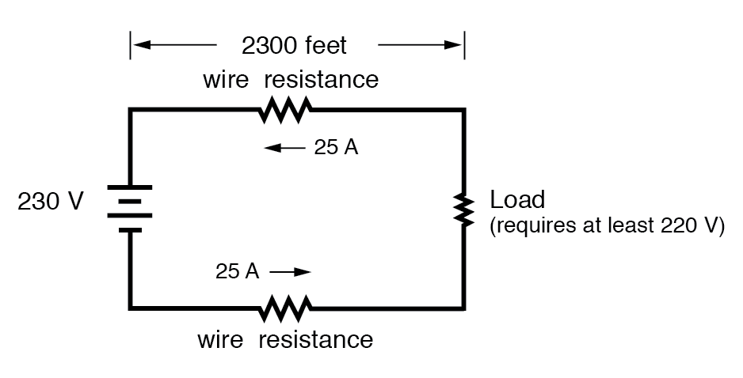
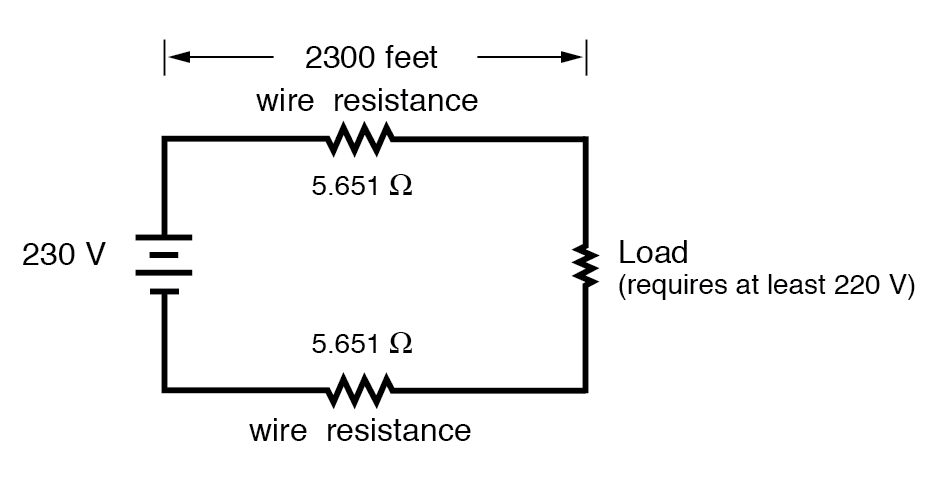

Conductor ampacity rating is a crude assessment of resistance based on the potential for current to create a fire hazard. However, we may come across situations where the voltage drop created by wire resistance in a circuit poses concerns other than fire avoidance. For instance, we may be designing a circuit where voltage across a component is critical, and must not fall below a certain limit. If this is the case, the voltage drops resulting from wire resistance may cause an engineering problem while being well within safe (fire) limits of ampacity:

If the load in the above circuit will not tolerate less than 220 volts, given a source voltage of 230 volts, then we’d better be sure that the wiring doesn’t drop more than 10 volts along the way. Counting both the supply and return conductors of this circuit, this leaves a maximum tolerable drop of 5 volts along the length of each wire. Using Ohm’s Law (R=V/I), we can determine the maximum allowable resistance for each piece of wire:
$$R = \frac{V}{I} = \frac{5 \text{ V}}{25 \text{ A}} = 0.2 \text{ }\Omega$$
We know that the wire length is 2300 feet for each piece of wire, but how do we determine the amount of resistance for a specific size and length of wire? To do that, we need another formula:
$$R = \rho (\frac{l}{A})$$
This formula relates the resistance of a conductor with its specific resistance (the Greek letter “rho” (ρ), which looks similar to a lower-case letter “p”), its length (“l”), and its cross-sectional area (“A”). Notice that with the length variable on the top of the fraction, the resistance value increases as the length increases (analogy: it is more difficult to force liquid through a long pipe than a short one), and decreases as cross-sectional area increases (analogy: liquid flows easier through a fat pipe than through a skinny one). Specific resistance is a constant for the type of conductor material being calculated.
The specific resistances of several conductive materials can be found in the following table. We find copper near the bottom of the table, second only to silver in having low specific resistance (good conductivity):
Specific Resistance at 20 Degrees Celsius| Material | Element/Alloy | (ohm-cmil/ft) | (microohm-cm) |
|---|---|---|---|
| Nichrome | Alloy | 675 | 112.2 |
| Nichrome V | Alloy | 650 | 108.1 |
| Manganin | Alloy | 290 | 48.21 |
| Constantan | Alloy | 272.97 | 45.38 |
| Steel* | Alloy | 100 | 16.62 |
| Platinum | Element | 63.16 | 10.5 |
| Iron | Element | 57.81 | 9.61 |
| Nickel | Element | 41.69 | 6.93 |
| Zinc | Element | 35.49 | 5.90 |
| Molybdenum | Element | 32.12 | 5.34 |
| Tungsten | Element | 31.76 | 5.28 |
| Aluminum | Element | 15.94 | 2.650 |
| Gold | Element | 13.32 | 2.214 |
| Copper | Element | 10.09 | 1.678 |
| Silver | Element | 9.546 | 1.587 |
* = Steel alloy at 99.5 percent iron, 0.5 percent carbon
Notice that the figures for specific resistance in the above table are given in the very strange unit of “ohms-cmil/ft” (Ω-cmil/ft), This unit indicates what units we are expected to use in the resistance formula (R=ρl/A). In this case, these figures for specific resistance are intended to be used when length is measured in feet and cross-sectional area is measured in circular mils.
The metric unit for specific resistance is the ohm-meter (Ω-m), or ohm-centimeter (Ω-cm), with 1.66243 x 10-9 Ω-meters per Ω-cmil/ft (1.66243 x 10-7 Ω-cm per Ω-cmil/ft). In the Ω-cm column of the table, the figures are actually scaled as µΩ-cm due to their very small magnitudes. For example, iron is listed as 9.61 µΩ-cm, which could be represented as 9.61 x 10-6 Ω-cm.
When using the unit of Ω-meter for specific resistance in the R=ρl/A formula, the length needs to be in meters and the area in square meters. When using the unit of Ω-centimeter (Ω-cm) in the same formula, the length needs to be in centimeters and the area in square centimeters.
All these units for specific resistance are valid for any material (Ω-cmil/ft, Ω-m, or Ω-cm). One might prefer to use Ω-cmil/ft, however, when dealing with round wire where the cross-sectional area is already known in circular mils. Conversely, when dealing with odd-shaped busbar or custom busbar cut out of metal stock, where only the linear dimensions of length, width, and height are known, the specific resistance units of Ω-meter or Ω-cm may be more appropriate.
Going back to our example circuit, we were looking for wire that had 0.2 Ω or less of resistance over a length of 2300 feet. Assuming that we’re going to use copper wire (the most common type of electrical wire manufactured), we can set up our formula as such:
$$R = \rho (\frac{l}{A})$$
Solving for the unknown area, A:
$$A = \rho (\frac{l}{R})$$
$$A = (10.09 \text{ }\Omega\text{-cmil/ft}) (\frac{2300 \text{ ft}}{0.2 \text{ }\Omega}) = 116,035 \text{ cmils}$$
Algebraically solving for A, we get a value of 116,035 circular mils. Referencing our solid wire size table, we find that “double-ought” (2/0) wire with 133,100 cmils is adequate, whereas the next lower size, “single-ought” (1/0), at 105,500 cmils is too small. Bear in mind that our circuit current is a modest 25 amps. According to our ampacity table for copper wire in free air, 14 gauge wire would have sufficed (as far as not starting a fire is concerned). However, from the standpoint of voltage drop, 14 gauge wire would have been very unacceptable.
Just for fun, let’s see what 14 gauge wire would have done to our power circuit’s performance. Looking at our wire size table, we find that 14 gauge wire has a cross-sectional area of 4,107 circular mils. If we’re still using copper as a wire material (a good choice, unless we’re really rich and can afford 4600 feet of 14 gauge silver wire!), then our specific resistance will still be 10.09 Ω-cmil/ft:
$$R = \rho (\frac{l}{A}) = (10.09 \text{ }\Omega\text{-cmil/ft}) (\frac{2300 \text{ ft}}{4107 \text{ cmil}}) = 5.651 \text{ }\Omega$$
Remember that this is 5.651 Ω per 2300 feet of 14-gauge copper wire, and that we have two runs of 2300 feet in the entire circuit, so each wire piece in the circuit has 5.651 Ω of resistance:

Our total circuit wire resistance is 2 times 5.651, or 11.301 Ω. Unfortunately, this is far too much resistance to allow 25 amps of current with a source voltage of 230 volts. Even if our load resistance was 0 Ω, our wiring resistance of 11.301 Ω would restrict the circuit current to a mere 20.352 amps! As you can see, a “small” amount of wire resistance can make a big difference in circuit performance, especially in power circuits where the currents are much higher than typically encountered in electronic circuits.
Let’s do an example resistance problem for a piece of custom-cut busbar. Suppose we have a piece of solid aluminum bar, 4 centimeters wide by 3 centimeters tall by 125 centimeters long, and we wish to figure the end-to-end resistance along the long dimension (125 cm). First, we would need to determine the cross-sectional area of the bar:
$$A = \text{Width } \times \text{ Height} = 4 \text{ cm} \times 3 \text{ cm} = 12 \text{ cm}^2$$
We also need to know the specific resistance of aluminum, in the unit proper for this application (Ω-cm). From our table of specific resistances, we see that this is 2.65 x 10-6 Ω-cm. Setting up our R=ρl/A formula, we have:
$$R = \rho (\frac{l}{A}) = (2.65 \text{x} 10^{-6} \text{ }\Omega\text{-cmil/ft}) (\frac{125 \text{ cm}}{12 \text{ cm}^2}) = 27.604 \text{ }\mu \Omega$$
As you can see, the sheer thickness of a busbar makes for very low resistances compared to that of standard wire sizes, even when using a material with a greater specific resistance.
The procedure for determining busbar resistance is not fundamentally different than for determining round wire resistance. We just need to make sure that cross-sectional area is calculated properly and that all the units correspond to each other as they should.